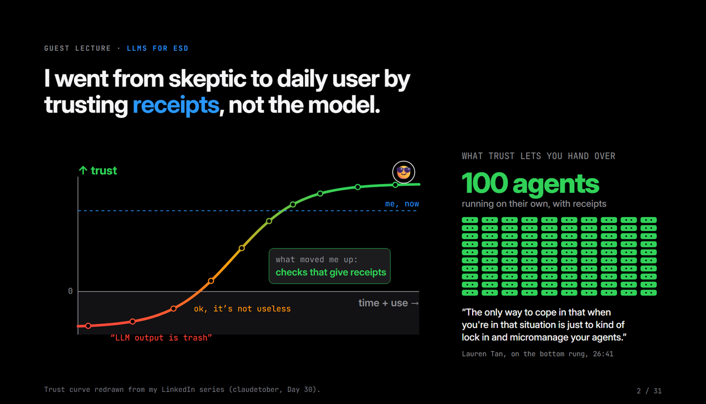
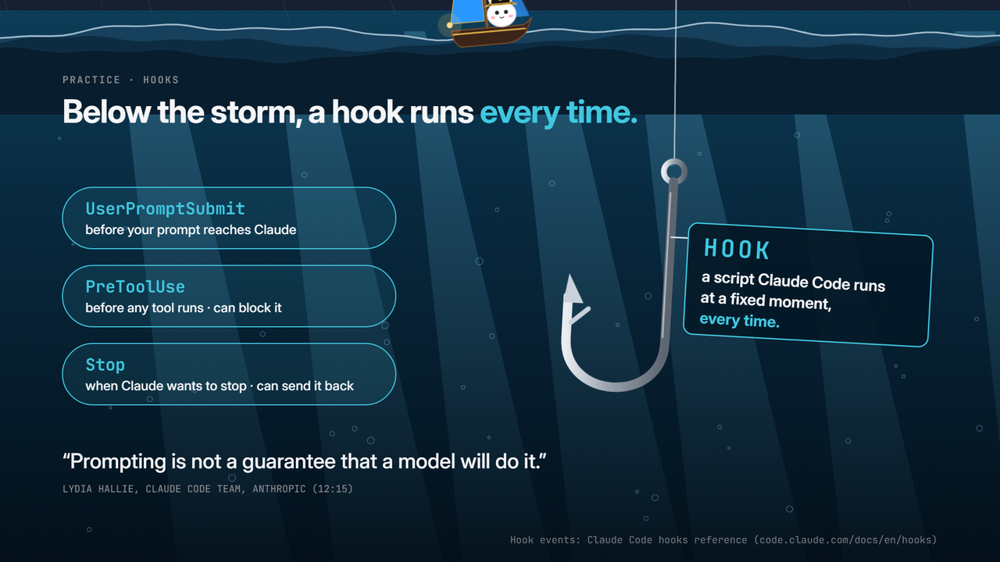

Lecture 1
LLMs for ESD
How coding agents are built (the harness), what goes into their context, and how to evaluate their output, with examples from my own research.
Talks on large language models and coding agents, given at the Singapore University of Technology and Design. Each deck is one HTML file built with D3 that runs in the browser. Press → or Space to advance, F for fullscreen and P for the presenter view.

How coding agents are built (the harness), what goes into their context, and how to evaluate their output, with examples from my own research.

Teaching machine learning in 2019 vs now, with a live demo of ML Explainers, how agents work, then three habits: checks, hooks, and keeping personal data (PDPA) out of the prompt.